头发
Paper朱 p05 VRoid 头发绑骨
这一集约 4 分 22 秒，没有章节。标题栏是 VRoid Studio 1.5.0 - Xiduochuan.vroid*，星号还在。顶栏和骨骼面板是英文。刘海上的黄、绿、粉、紫是用来分辨骨组的纯色，不是最终发色。滑杆数字只写该帧读得到的；这一集讲参数时没有拖这些滑杆。口播有、画面上没点开的地方会标明。
衣服定了再做头发物理
发型界面里，编辑头发下面还有一格
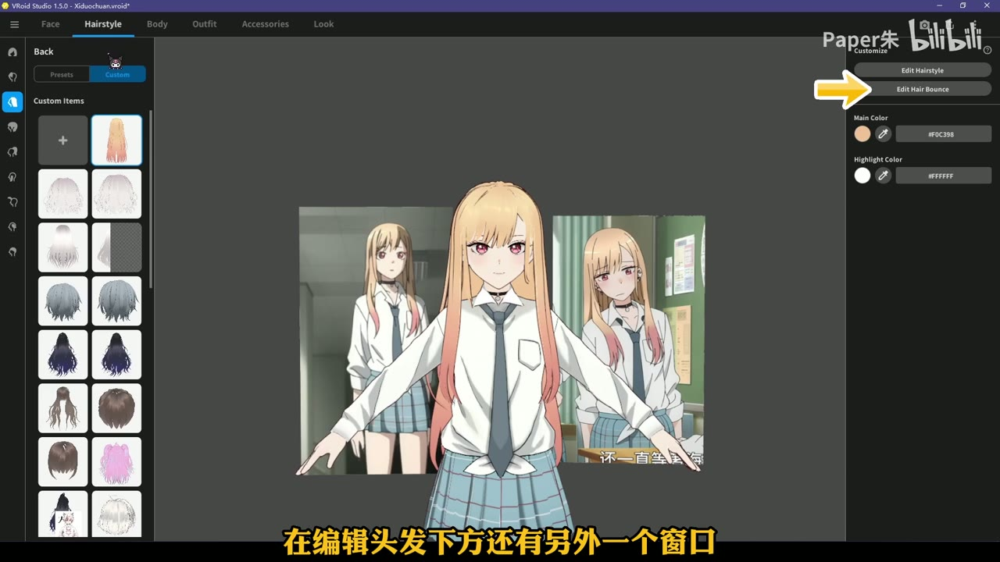
口播说前面几部分做完，最后一步才进头发物理。点顶栏 Hairstyle，左侧停在 Back，Custom 亮着，上面还有 Presets。右侧两颗按钮是 Edit Hairstyle 和 Edit Hair Bounce，箭头指着下面那颗。字幕把这一格说成「也就是英文为 added hair bounce」，按钮上印的字是 Edit Hair Bounce。接着的字幕是「其实也就是编辑头发物理」。口播补充：这一环通常放在最后做，因为衣服如果做得比较夸张，头发最后说不定还要改型。参考图上那句「还一直等着」是原画自带的，不是这一步的操作。
自动生成，这一步叫绑骨
后发先打开骨骼编辑器
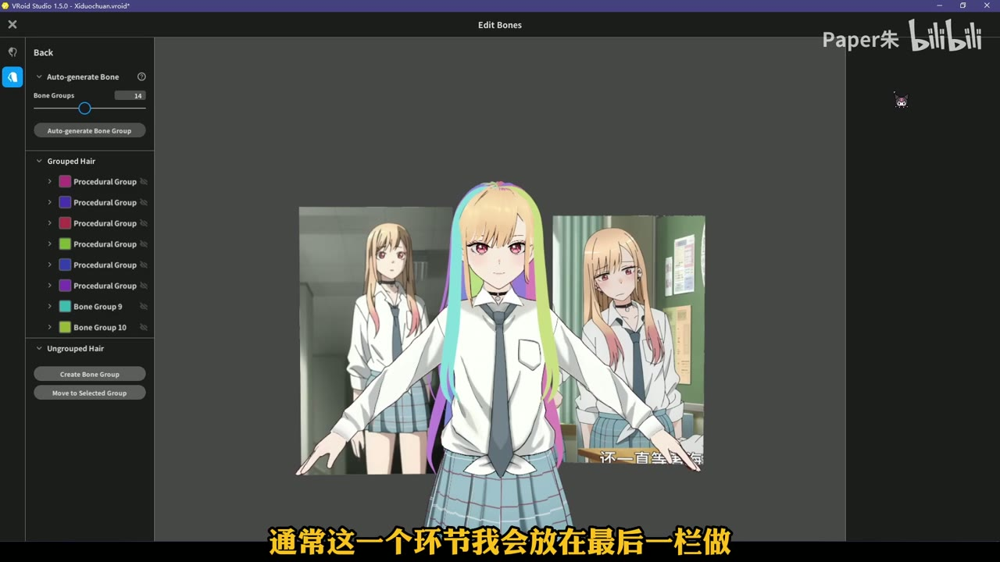
点 Edit Hair Bounce 之后，顶上变成 Edit Bones。这一帧还在 Back。左侧 Auto-generate Bone 展开着，Bone Groups 是 14，下面一颗 Auto-generate Bone Group。Grouped Hair 里先是一串 Procedural Group，再是青色的 Bone Group 9 和绿色的 Bone Group 10。Ungrouped Hair 在更下面，底部还有 Create Bone Group 和 Move to Selected Group，这一集没有去点这两颗。模型两侧已经是青、绿、紫的长条，用来把组分开看。口播说衣服夸张时发型可能还要改，所以绑骨放最后。
在要做的那一层里点自动生成
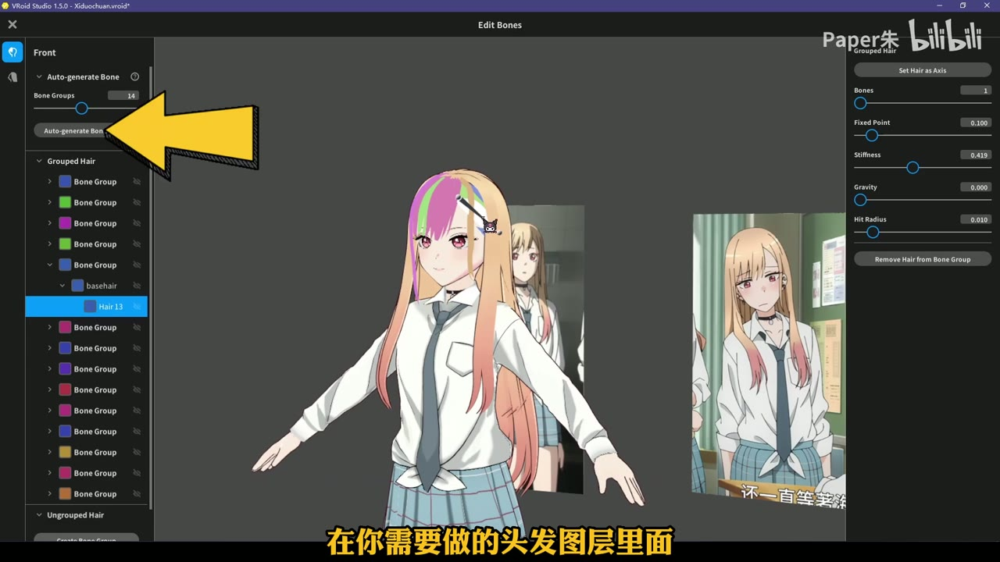
切到 Front。Bone Groups 仍是 14。黄箭头指着 Auto-generate Bone Group，字幕说在需要做的头发图层里面，下一句是「直接点击自动生成」。刘海和侧发已经分成粉、绿、黄几条。口播把这一步叫绑骨。列表里的组是自动出来的，这一帧没有看见把 Bone Groups 从别的数字拖到 14。
点中一根，右侧才是单根的参数
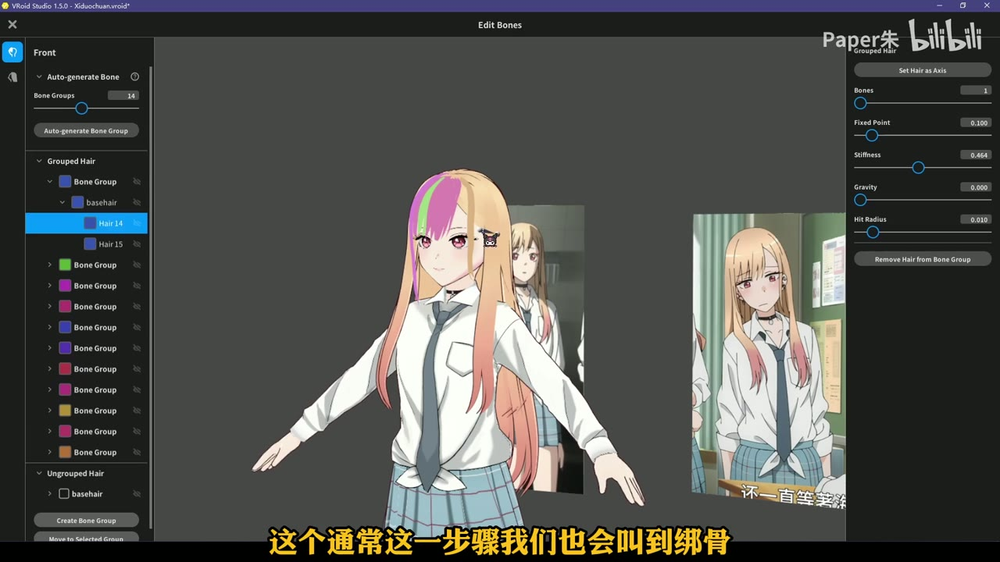
选中单根 Hair 14 时，右侧标题变成 Grouped Hair，最上面是 Set Hair as Axis。这一帧五条读数是 Bones 1、Fixed Point 0.100、Stiffness 0.464、Gravity 0.000、Hit Radius 0.010，下面一颗 Remove Hair from Bone Group。Set Hair as Axis 这一下没有点开。底部 Ungrouped Hair 里只有没勾的 basehair。口播接着要做的是把不想动的头发从这些自动生成的组里拿掉。
刘海和耳侧从骨组里拿掉
右键骨组，菜单里有删除
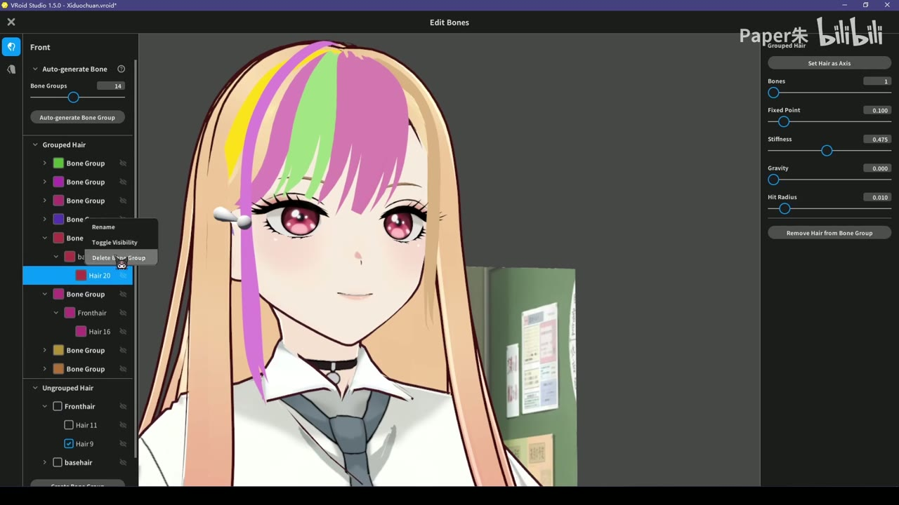
镜头推到脸上。刘海被涂成黄、绿、粉、紫四条纯色，用来认组。Hair 20 亮在一个红色 Bone Group 里，右键菜单开着，第三项是 Delete Bone Group。Ungrouped Hair 下面，Fronthair 里的 Hair 11 没勾，Hair 9 勾着，basehair 没勾。口播说这里要删的是不想动的头发：被束在耳后的、以及通常不会动的物理，包括耳朵旁边的鬓发，这几个组删掉即可。右侧仍有 Remove Hair from Bone Group，这一帧鼠标停在菜单上，没有停在那颗按钮上。
新接触的话，删完就够
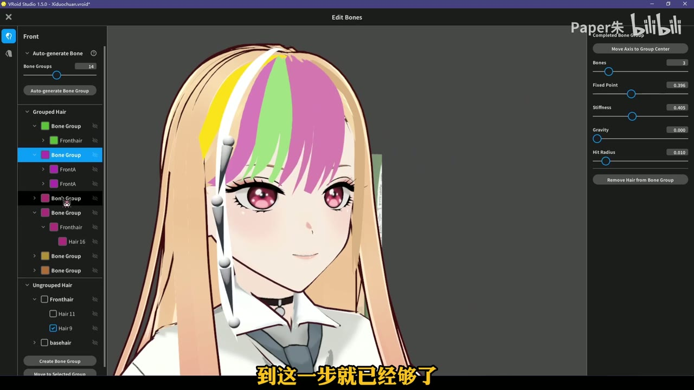
点中一整组时，右侧从 Set Hair as Axis 换成 Move Axis to Group Center，标题是 Completed Bone Group。这一帧读数是 Bones 3、Fixed Point 0.396、Stiffness 0.405、Gravity 0.000、Hit Radius 0.010，和上一帧选中单根时不一样，是跟着当前选中项走的，不是口播指定的目标值。脸侧那条发上排着一串白色圆点。Ungrouped Hair 里 Hair 9 仍勾着，Fronthair、Hair 11、basehair 没勾。字幕说新接触 VRoid 的朋友到这一步就已经够了。口播接着说还是要稍微讲一下右边几个参数，刚接触的话只用默认值。
五个参数用一张示意图讲
Bones 是一串接起来的骨
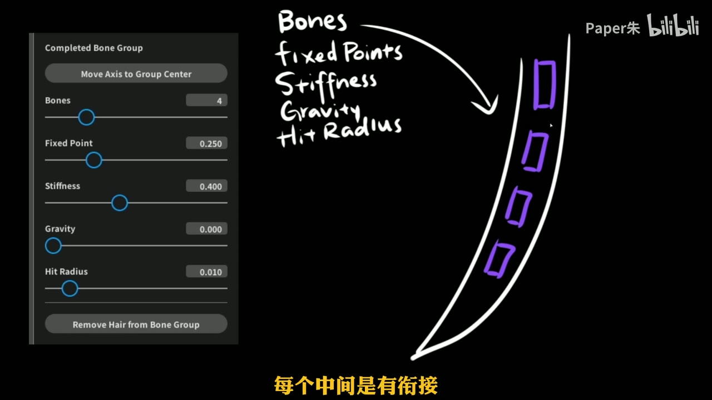
这一段离开模型，滑杆没有被拖动。嵌在左边的面板一直是同一组读数：Bones 4、Fixed Point 0.250、Stiffness 0.400、Gravity 0.000、Hit Radius 0.010。手写把 Fixed Point 写成了 Fixed Points，面板上的字是 Fixed Point。字幕说动骨决定头发应该怎样动，每个中间是有衔接。图上一条发束里画了四个紫框，和 Bones 的 4 对得上。面板上的 Move Axis to Group Center 和 Remove Hair from Bone Group 都还在，示意图里没有去点。
Fixed Point 越往下，动的地方越靠下
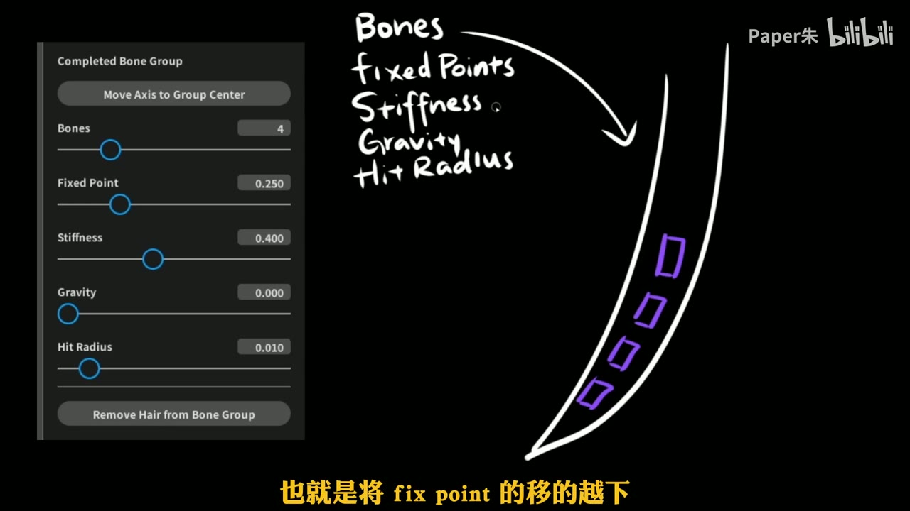
口播说 fix point 代表这根头发大概从哪里开始动；没有动骨的时候头发是不会动的。字幕的原句是「也就是将 fix point 的移的越下，那么他会动的位置就会越从下方开始」。图上四个紫框从发束上段挪到了下半段。面板读数没变，仍是 Fixed Point 0.250。这是在解释方向，不是把滑杆拖到 0.250。
Stiffness 越大，单根摆得越小
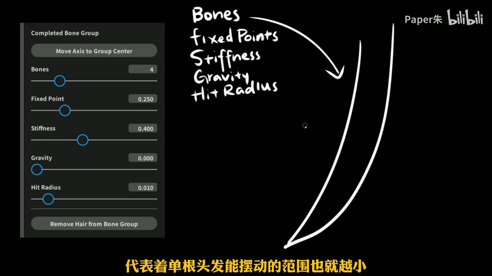
口播说 stiffness 决定头发摆动的僵硬程度，值越大，单根能摆的范围就越小。这一帧把紫框收掉，只留两条并排的发束轮廓。Stiffness 仍停在 0.400，没有看见往右或往左拖。
Gravity 是往下坠的程度
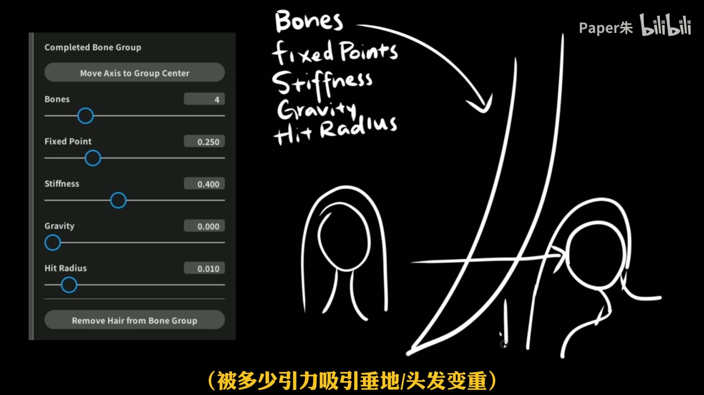
口播说这也就是重力：头发的重力决定了在整个物理环境下，角色会不会让头发被多少引力吸向垂地、头发变重。括号里的这句就是画面上的字幕。图左边是一个简笔头和两缕垂发，右边发束在末端折下去。Gravity 的圆点停在最左，读数 0.000。
Hit Radius 是骨的碰撞体积
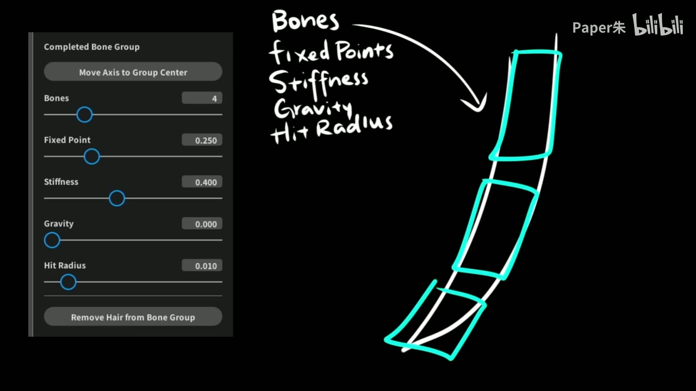
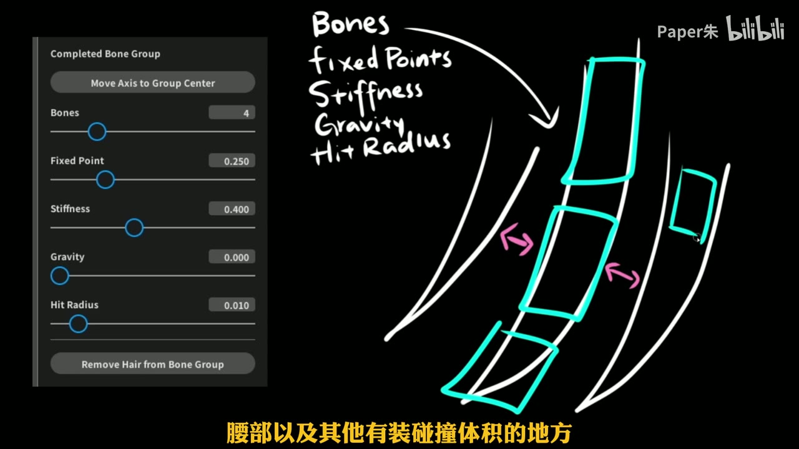
口播说最后一个是 hit radius，也就是碰撞体积：决定骨的一个宽度，或者它的整体体积。青色方框套在发束上，表示这个体积。再画第二束时，两串框之间有粉色对向箭头。字幕说这样使其在头发和头发之间，或者在碰撞到其他有碰撞体积的物体时起作用，比如说腰部以及其他有装碰撞体积的地方，决定它们之间会不会穿模，以及撞到什么地方结束。Hit Radius 一直是 0.010。口播收束：这就是基本的几个头发参数；刚接触的话只需要使用默认的值。
回到模型，纯色只为了认组
选中的组上会露出一串白点
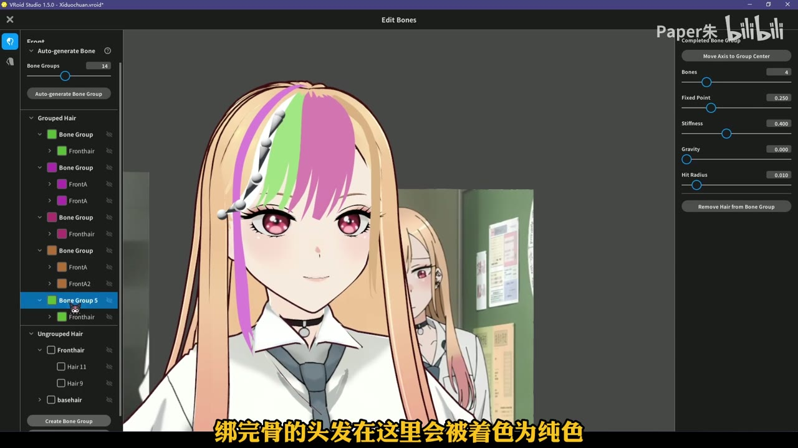
回到 Front。口播说然后决定哪些头发会动，需要调的地方按刚才的原理来回试，多试验就可以了；这一段主要还是把不会动的头发从发组里面删除。Bone Group 5 亮着，下面挂着 Fronthair。黄色刘海上排着一串白色圆点，粉、绿、紫的纯色条还在。字幕说绑完骨的头发在这里会被着色为纯色，比较好分辨；也可以在左边很简单地找到应该有的组。这一帧右侧读数回到示意图那一组：Bones 4、Fixed Point 0.250、Stiffness 0.400、Gravity 0.000、Hit Radius 0.010。Ungrouped Hair 里的 Hair 9 这时没勾。
先关掉编辑器，再去 Photo Booth 看风
关闭时要选存不存
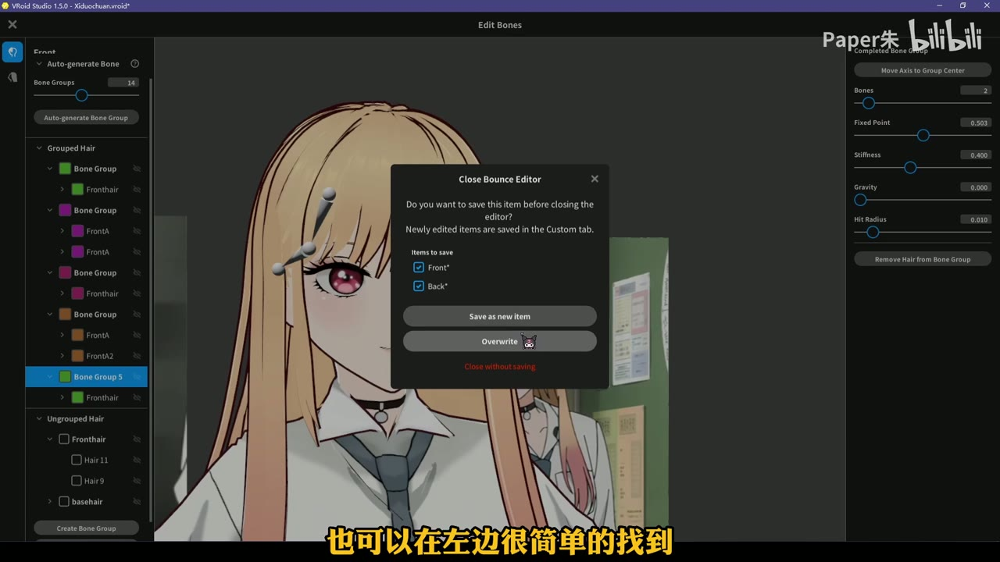
关编辑器时弹出 Close Bounce Editor。正文是 Do you want to save this item before closing the editor? 以及 Newly edited items are saved in the Custom tab. Front* 和 Back* 都勾着。这一帧鼠标在 Overwrite 上，不是在 Save as new item 上，所以最终按了哪一颗，这一帧看不出来。字幕这时还停在「也可以在左边很简单的找到」。紧接着的字幕是「新存为项目」，和 Save as new item 对得上，但是按下的那一下没有单独一帧。口播说做骨失败之前的存档也会丢。下一镜已经回到 Hairstyle 的 Front → Custom，彩色条收掉了。
口播说的相机，画面上是 Photo Booth 的 Wind
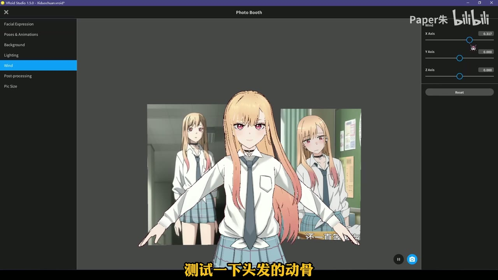
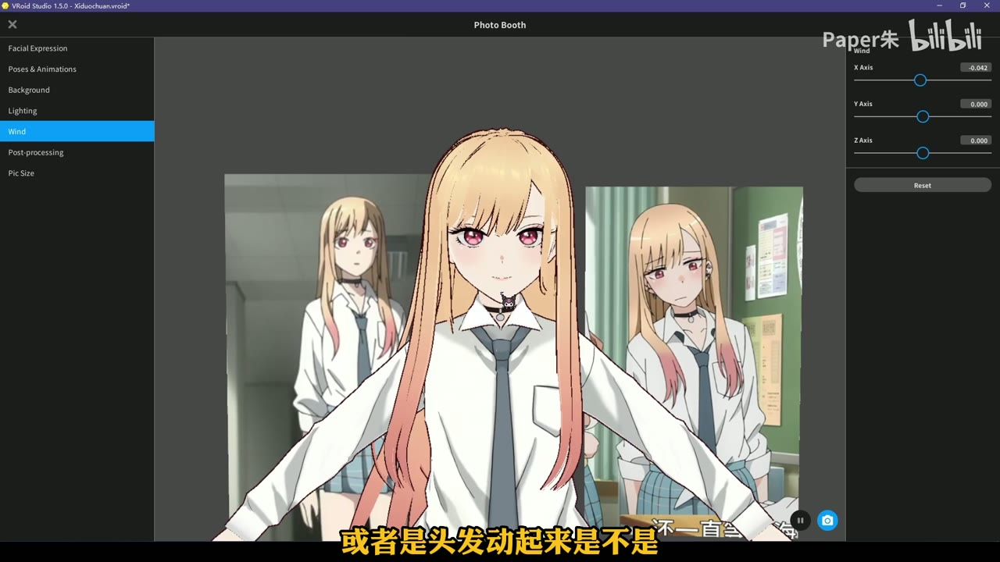
口播说这里可以进到相机界面。打开的窗口标题是 Photo Booth，左侧亮着的是 Wind，不是一颗叫相机的按钮。同列还能看见 Facial Expression、Poses & Animations、Background、Lighting、Post-processing、Pic Size，这一段用的是 Wind。X Axis 先读到 0.317，随后收到 -0.042，Y、Z 都是 0.000。长发还垂在身前，没有飞出一截，也没有缺一块。字幕要检查的是有没有丢失的头发，以及头发动起来是不是有问题；口播说大体上看起来没有什么问题。下一句字幕是「那么绑骨到这里可以暂时告一段落」。说完这句时窗口已经点到 Body 的 Whole Body，那些身体滑杆这一集没有再讲。